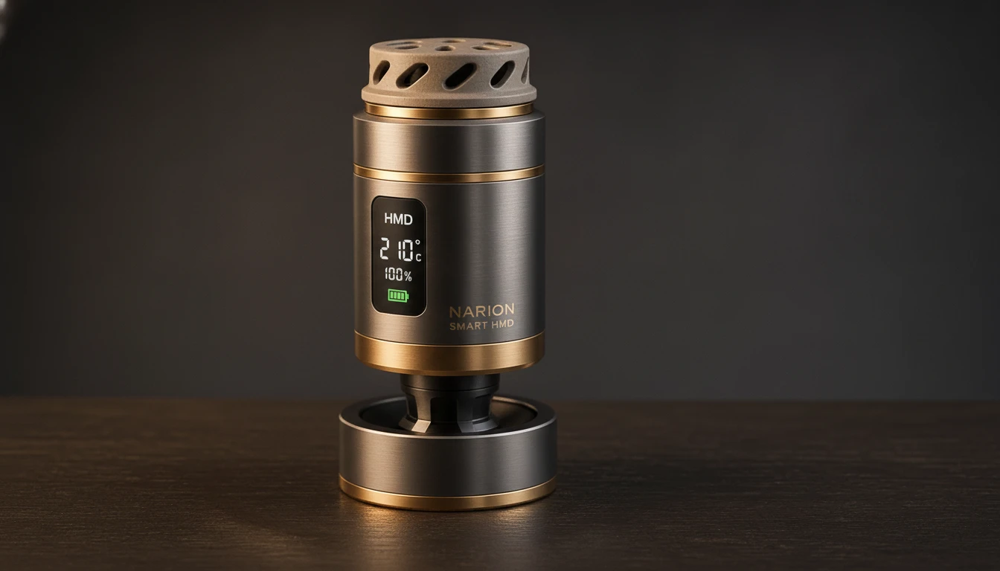

Elektrikli Akıllı Nargile Lülesi • Kömürsüz Seramik KözlükKömürsüz. Kablosuz.
Saf Yaprak Tütün Aroması.
Nargilede is ve kül, tütünden değil üstünde yanan kömürden kaynaklanır. NARION Smart HMD; gıda sınıfı Saf seramik ısı çekirdeği, Hızlı Şarj modüler güç mimarisi ve ±1°C PID kontrolüyle gerçek nargile tütününü yakmadan buharlaştırır.
NARION Smart HMD — Sesli Ürün Tanıtım Filmi
közsüz elektrikli ısıtma, 8 katmanlı Saf seramik mimari, 0.96" OLED kontrol, nefes sensörü ve 65W Pogo-Pin şarj istasyonunu sesli anlatım ve senkronize ekran yazılarıyla izleyin.
Sesli Anlatım Tam Metni (Transkript)
[Yumuşak lounge müziği]
01 · Geleneksel Kömür Sorunu: Kömür yakmak, folyo germek, masaya dökülen kül ve 20 dakikada bir köz yenilemek... O devir artık kapandı.
02 · NARION Smart HMD: Karşınızda yeni NARION Smart HMD. %100 gerçek yaprak tütünle çalışan, tamamen kablosuz ve kömürsüz akıllı lüle.
03 · Közsüz Elektrikli Isıtma: Kömür yanmadığı için közsüz elektrikli ısıtma sağlanır. İs kokusu olmadan, ilk dakikadan son nefese saf aroma.
04 · 8 Katmanlı Termal Mimari: 8 katmanlı mimaride Saf petek seramik ısıtıcı, sıcaklığı ±1°C hassasiyetle kilitler. Çok Katmanlı Termal zırh, dış gövdeyi 42°C altında serin tutar.
05 · Akıllı Kontrol & Güvenlik: Gömülü OLED ekrandan Soft, Medium veya Hard modunu seçin. Akıllı nefes sensörü her çekişte gücü dinamik artırır; devrilme anında 200 ms'de elektriği keser.
06 · Hızlı Şarj Güç & 65W Hızlı Şarj Dock: 65W Pogo-Pin şarj istasyonundan alın; 3,5 dakikada ön ısıtmayla mevcut nargilenize veya 45° Bayonet gövdeye takın. Hızlı Şarj bataryayla 90 dakikayı aşan seans, 5 saniyede kartuş değişimi.
07 · Kapanış: NARION Smart HMD. Közün ötesinde, saf nargile mühendisliği. Seri 01 ön kayıtta — narionhookah.com.
Közlü mü, NARION Akıllı Lüle mi? — Lounge & Mobil Kontrol Filmi
Dolu bir İstanbul lounge akşamında garsonun sunduğu tercih, misafirlerin közsüz elektrikli NARION Smart HMD seçimi, telefondaki Bluetooth akıllı uygulamayla masadan anlık sıcaklık yönetimi ve %98 işletme tasarrufu.
Kafe & Lounge Filmi Tam Diyalog ve Anlatım Metni (Transkript)
[Canlı lounge ambiyansı ve yumuşak müzik]
01 · Dış Ses: Şık bir lounge akşamında keyfi bozan tek bir şey vardır: 20 dakikada bir masaya gelen köz maşası, uçuşan kül ve ağır kömür kokusu.
02 · Garson (Nargile Sommelier): Hoş geldiniz efendim. Nargilenizi klasik közlü mü hazırlayalım, yoksa közsüz elektrikli yeni NARION Akıllı Lüle ile mi denemek istersiniz?
03 · Kadın Misafir: Köz kokusu ve kül hiç olmasın... Kesinlikle NARION Akıllı Lüle olsun lütfen.
04 · Garson: Harika tercih efendim. %100 gerçek yaprak tütünle, tam 210°C'de sabitliyorum.
05 · Dış Ses: Folyo yok, maşa yok, köz ocağı beklemek yok. 65W şarj istasyonundan alınıp saniyeler içinde nargileye kilitlenir; Saf seramik çekirdek tütünü yakmadan, ±1°C hassasiyetle demler.
06 · Erkek Misafir: İçimi ve tadı inanılmaz temiz... Ne yanık acılığı var, ne de kömür ağırlığı.
07 · Kadın Misafir (Mobil Uygulama): Bak, telefondaki NARION uygulamasıyla ısıyı da anlık yönetebiliyoruz; tek dokunuşla 215°C'ye aldım bile.
08 · Dış Ses: Bluetooth akıllı uygulama sayesinde garson beklemeden sıcaklığı telefonunuzdan derece derece kontrol edin. 90 dakikayı aşan kesintisiz seans, közsüz ısıtma ve 42°C altında el yakmayan zırh.
09 · Dış Ses (Kapanış): Misafir için saf keyif; işletme için %98 enerji tasarrufu ve sıfır közcü maliyeti. Seçkin mekanların yeni standardı: NARION Smart HMD.
Altı Katmanlı Termal Mimari ve
Canlı Telemetri Mühendisliği
İstanbul'daki 5 eksenli CNC tezgahlarda Havacılık Sınıfı havacılık alüminyumundan işlenen R2.0 şasi; batarya ve elektroniği yüksek ısıdan ve duman akışından fiziksel olarak %100 ayırır.



Termal Şoka Dayanıklı Teknik Seramik & Canlı Ekran
Kordierit üst kapak el yakmaz; gömülü OLED ekran telefon gerektirmeden hedef sıcaklığı, kalan şarjı ve aktif modu gösterir.
90–110 Dakika Tek Kartuş & 5 Saniyede Hot-Swap
5.000 mAh yüksek akım (45A) endüstriyel hücre paketi ve 30A BMS; uzayan seanslarda soğuk üst bilezikten 5 saniyede yedek kartuşa geçilir.
+%15 Dinamik Nefes Gücü & 200 ms Devrilme Kesicisi
MEMS basınç sensörü nefes çekişini milisaniyede algılayıp duman düşüşünü önler; >35° devrilmede IMU jiroskop 200 ms içinde elektriği keser.
Serin Dış Kovan & FKM Contalı İzole Duman Yolu
300°C sınıfı thermal armor plaka ısıyı yalnızca aşağıya yönlendirir; dış gövde <42°C kalır, Ø18 mm duman tüneli elektroniğe asla duman sızdırmaz.
Ø57.8 mm Gıda Sınıfı Seramik + Ø67.5 Lüle / Ø64 Pod Yuvası
Zırhlı Hassas Sıcaklık Sensörü sensörlü Saf Seramik plaka sıfır metalik tat üretir; hem klasik phunnel lülelere hem Alüminyum Flavour Pod ve 45° Bayonet'e oturur.
Gerçek Ön Isıtma Süresi: Neden 3,5 – 4,5 Dakika?
Açık ince tel rezistanslar 60 saniyede kızarsa da tütünün üst katmanını yakıp acılaştırır. NARION'daki Ø57.8×5 mm Saf seramik çekirdek ve 4.5 mm Havacılık Sınıfı Metal termal taban (toplam 21,8 kJ ısı sığası), 12–18 g gliserinli ıslak yaprak tütünü 3,5 – 4,5 dakikada homojen demler. Kömür ocağında 12–15 dakika bekleyişten 3 kat hızlıdır; maşa gerektirmeden ilk nefesten itibaren yanık tadı olmayan yoğun beyaz buhar verir.
Kendi Gerçek Tütününüz, Kendi Nargileniz,
Sıfır Kömür ve Tutarlı Buhar Yoğunluğu.
NARION Smart HMD sıvı likit veya kapalı kapsül zorunluluğu getirmez. Her zaman kullandığınız gerçek nargile tütününü (Blonde Leaf, Dark Leaf veya bitkisel karışım) kullanır; hem NARION 45° Bayonet gövdelere hem de mevcut tüm geleneksel nargilelere doğrudan oturur.
22g Yerine 13g Gerçek Yaprak Tütün
Klasik lülelerde üst tabaka yandığı için 20–24 g tütün basılır. NARION Ø64 mm Flavour Pod ve 3 Kademeli Aroma Merdiveni yalnızca 12–14 g (ort. 13 g) tütünü son damlasına kadar demler; her lülede 9 gram tütün cepte kalır.
Mevcut Tüm Nargilelerle %100 Uyumlu
Ø67.5 mm standart lüle faturası ve kutudan çıkan kısa/uzun silikon adaptörler sayesinde elinizdeki klasik nargile serlerine saniyeler içinde sızdırmaz oturur.
Homojen Aroma, Sıfır Kömürleşmiş Katman
Kömürün 450°C düzensiz ateşi gibi üst katmanı yakıp külleştirmez. Kapalı termal hazne ve Hassas Sensör PID kontrolü, son dakikaya kadar ilk nefes berraklığını korur.
Başka Hiçbir Elektronik Lülede Olmayan 3 Akıllı Kontrol Özelliği
Ters Üfleme Algılama & Otomatik Soğutma
Duman sertleştiğinde marpuçtan üflediğiniz an çift yönlü Akıllı Nefes Sensörü pozitif basıncı algılar; rezistansı 12 saniye kapatır ve hedef ısıyı otomatik -5°C düşürür.
13g Pod'dan 100 Dk Tam Verimli Demleme
0–25. dk baz ısıda üst notaları korur; 25. dk'da +4°C, 55. dk'da +8°C basamaklı artışla alt katmandaki şerbeti yakmadan son damlasına kadar buharlaştırır.
Tek Dokunuşla Profil & Scorch Guard
Tütün kavanozu/pod üzerindeki NFC etiketiyle ideal derece otomatik yüklenir; gliserin bittiğinde kapalı-çevrim ısıl yük gözlemcisi yanık tadı oluşmadan gücü keser.
Köz Ocağı Yok. Kül Yok. Sadece Tak, Çevir ve Başla.
65W USB-C PD masaüstü istasyonundan tam dolu başlığı alın, kristal cam şişeli NARION YALIN veya mevcut nargilenize 45° çeyrek turla kilitleyin ve üst seramik kadrandan derecenizi seçin. Kapalı ev salonlarında ve VIP localarda sıfır kömür kokusu, sıfır kül ve közsüz elektrikli ısıtmayla yoğun beyaz buhar üretir.
4 Adımda Kurulum Akışı (Folyo Yok, Maşa Yok, Köz Ocağı Yok)
KÖMÜR OCAĞINDA 12–15 DK BEKLEME YERİNE 3,5–4,5 DK OTOMATİK ÖN ISITMAHazneyi Doldurun
Çıkarılabilir Ø64 mm Flavour Pod'a veya kendi seramik lülenize 12–18 gram tütününüzü hava kanalları açık kalacak şekilde yerleştirin. Folyo germek veya delmek gerekmez.
Oturtun ve Kenetleyin
Başlığı geleneksel nargilenize veya NARION 45° bayonet yakaya oturtun. 250°C dayanımlı SmCo/N52SH mıknatıs ve 6-eksen IMU devrilme sensörü tam güvenlik sağlar.
OLED Ekrandan Derece Seçin
Uygulama indirmeden cihaz üstü 0.96" OLED ekran ve dokunsal kadrandan (Soft / Medium / Hard) veya QR web arayüzünden 150°C – 240°C hedef ısıyı kilitleyin.
3,5 – 4,5 Dk Sonra Seansa Başlayın
Durum halkası zümrüt yeşiline döndüğünde 90–110 dakika kesintisiz kablosuz seans başlar. Uzatmak için soğuk bilezikten 5 saniyede dolu batarya kartuşuna geçin.
Tütün Türüne Göre Akıllı Isı Eğrileri
ve OLED / Işık Durum Rehberi
Her yaprak türünün gliserin ve şeker karakteri farklıdır. Kömürün kontrolsüz 450°C ısısı yerine tütününüze özel optimize edilmiş PID profilini seçin:
Blonde Leaf Hassas Lezzet Eğrisi (185°C – 205°C)
Yıkanmış sarı yaprak tütünler yüksek şeker oranına sahiptir ve yüksek ısıda hızla acılaşır. NARION PID algoritması ~3,5 dakikalık yumuşak ön ısıtmanın ardından 195°C sabit ısıda tütünü yakmadan berrak ve yoğun buhar üretir.
- ✓ Yaprakları bastırmadan hazne üst sınırının 2 mm altına kadar serpiştirin.
- ✓ Orta hava kanalını açık bırakın; sıcak hava akışı tüm yaprak katmanlarından eşit geçer.
- ✓ Akıllı Nefes Sensörü nefes sensörü her çekişte ısı çökmesini otomatik dengeler.
Dark Leaf Güç & Gövde Eğrisi (215°C – 235°C)
Isıya dayanıklı koyu yaprak tütünler açılmak için daha yüksek termal enerji ister. NARION 4,0 – 4,5 dakikalık 235°C ön demlenmenin ardından 225°C PID ve çekiş anında +%15 Dynamic Draw Boost ile doygun gövdeyi korur.
- ✓ İri yaprakları hafifçe inceltip yarı-sıkı yerleştirin; iletim yüzeyi artar.
- ✓ Yeşil hazır onayından sonra ilk çekişten önce 30 saniye beklemek aroma doygunluğunu zirveye çıkarır.
- ✓ Sert gelirse maşayla köz indirmek yerine OLED kadrandan sıcaklığı 10°C düşürün.
Herbal & Wellness Yumuşak Buhar Eğrisi (175°C – 190°C)
Bitkisel lifler kömür altında hızla kavrulur. NARION'un 180°C Soft Mod profili lifleri yakmadan yalnızca aromatik gliserini buharlaştırır; yanık tat oluşmaz.
- ✓ Kül, is ve kömür kokusu olmadığı için tekstil ve perdelere ağır koku sinmez.
- ✓ 180 sn çekilmediğinde Auto-Sleep moduna geçerek bitkisel özlerin kurumasını önler.
Uygulamasız Tek Bakışta Telemetri ve Durum Işığı Dili
Saf Saf Seramik çekirdeğin 3,5–4,5 dakikalık homojen demlenme evresinde olduğunu bildirir; OLED ekranda anlık °C izlenir.
Seçilen sıcaklığa (±1°C) ulaşıldığını ve seansın kararlı dengede sürdüğünü gösterir.
Nefes çekişi algılandığında anlık +%15 dinamik güç takviyesini ve B2B garson ısı kilidini ifade eder.
Batarya %10'un altına indiğinde 5 sn Hot-Swap değişim zamanını veya >35° IMU devrilme kesicisini bildirir.
Kömür Yok, Kor Yok:
NARION Smart HMD R2.0
Smart HMD, nargile tütününü yanan kömürle değil, saf seramik bir ısıtıcı çekirdekle ısıtır. Kor taşımaya, folyoya ve sürekli kömür yenilemeye gerek kalmaz.
| Parametre | NARION Smart HMD R2.0 |
|---|---|
| Boyut ve Gövde | Ø72,5 × 134,5 mm • CNC işlenmiş havacılık sınıfı metal, Type III anodize + kordiyerit başlık |
| Isıtıcı Çekirdek | Ø57,8 × 5 mm saf seramik (90 W nominal / 150 W boost) • közsüz elektrikli ısıtma |
| Ön Isıtma | 3,5 – 4,5 dakika kontrollü termal ısınma |
| PID, Ekran ve Çekiş Sensörü | 150–240°C (±1°C hassas sensör) + 0,96" OLED + akıllı nefes sensörü (+%15 boost) |
| Pil ve Hızlı Şarj | Hızlı şarjlı değiştirilebilir kartuş (~35 dk) + 65 W altın pogo-pin dock + 5 sn değişim |
| Termal Kalkan ve IMU | Çok katmanlı termal yalıtım (dış kabuk < 42°C) + 6 eksenli IMU (>35° eğimde 200 ms kesme) |
| 4 Katmanlı Donanım Koruması (Rev R2.1) | 250°C termal sigorta (TCO) + çift sensör (hassas sensör ve yedek emniyet sensörü) + 248°C bağımsız analog emniyet kesicisi + otomatik donanım kesmesi |
%98 Enerji ve %41 Tütün Gramaj Tasarrufu
Köz, Cezve ve Tütün İsrafına Son
İster evinizde her akşam 95–105 dk nargile keyfi yapın, ister 30 masalık bir lounge işletin; prizden yalnızca 0,09 kWh (Evde 26 Kr / Kafede 48 Kr) elektrik çeken ve klasik lüledeki 22 g tütün yerine 13 g dolumla her seansta 9 gram tütün kurtaran şeffaf ekonomik analiz:
Evde 26 Kuruş Elektrik ve Her Lülede 9 Gram Daha Az Tütün!
Maşadan düşen kor közün salon halısını yakma kabusu, 45. dakikada 2. kez cezve yakma çilesi ve her lülede üstü yanıp çöpe giden 9 gram fazla tütün masrafı tamamen biter!
Evde Günde 1 Nargile (Ayda 30 Seans) İçen Bireysel Kullanıcının Doğrulanmış Gider Karşılaştırması
| Ev Gider Kalemi (Ayda 30 Seans) | Evde Kömürlü Lüle (22g) | Evde NARION Smart HMD (13g) | Ev Kullanıcısı Net Avantajı |
|---|---|---|---|
| 1. Perakende Kömür (8 Küp) vs Ev Elektriği | 720 ₺ / Ay (24,00 ₺/seans) | 7,80 ₺ / Ay (0,26 ₺/seans) | +712,20 ₺/ay — 2 parti perakende Hindistan cevizi közü yerine 0,09 kWh = 26 kuruş ev elektriği. |
| 2. Köz Cezvesi Elektriği (2 Kez Yakma) | 135 ₺ / Ay (4,50 ₺/seans) | 0 ₺ / Ay | +135 ₺/ay — Her seansta 2 kez çalışan 1000W köz cezvesi elektriği ve cezve yenileme biter. |
| 3. Lüle Yaprak Tütün Dolumu (3.000 ₺/kg Perakende) | 1.980 ₺ / Ay (22g = 660g/ay) | 1.170 ₺ / Ay (13g = 390g/ay) | +810 ₺/ay — Klasik lülede 22 g yerine 13 g tütünle her ay net 270 gram (%41) daha az tütün harcanır! |
| 4. Salon Halısı Yanık Riski & Kışın Kombi Kaybı | 600 ₺ / Ay | 0 ₺ / Ay (SmCo Mıknatıs + közsüz ısıtma) | +600 ₺/ay — Düşen kor köz yanığı ve kömür kokusu için kışın cam açıp evi soğutma kaybı sıfırlanır. |
| 5. 800 Çevrim Batarya Hücre Payı | 0 ₺ / Ay | 30 ₺ / Ay (1,00 ₺/seans) | -30 ₺/ay — Değiştirilebilir Yüksek Kapasiteli batarya kartuşunun uzun ömürlü çevrim payı. |
| EV KULLANICISI AYLIK TOPLAM | 3.435 ₺ / Ay | 1.207,80 ₺ / Ay (Tütün+Şarj+Pil) | EVDE AYDA +2.227 ₺, YILDA +26.724 ₺ NET TASARRUF! |
Evde Kendi İçim Sıklığınıza Göre Tasarrufunuzu Hesaplayın
Kafelerde %98 Enerji + %41 Tütün Gramaj Tasarrufu (Ayda +191.210 ₺ Net)
1. Bir Seanslık (95 – 105 Dk) Doğrulanmış Elektrik, Köz ve Tütün Gramaj Matematiği
Ticarethane elektriği (5,35 ₺/kWh × 0,09 kWh = 0,48 ₺), 1. sınıf toptan köz (8,5 küp = 22,10 ₺) ve toptan tütün (2.500 ₺/kg: klasik lüle 22 g vs NARION Pod 13 g) üzerinden birebir seans maliyeti:
| Seans Maliyet Kalemi (95–105 Dk) | Geleneksel Kömürlü Lüle (22g) | NARION Smart HMD (13g Pod) | Doğrulanmış Fiziksel & Ticari Hesap |
|---|---|---|---|
| 1. Isı Enerjisi (Köz vs Şebeke Elektriği) | 22,10 ₺ (8,5 Küp Hindistan Cevizi Közü) | 0,48 ₺ (0,09 kWh Priz Elektriği) | 72 Wh batarya ÷ %82 şarj verimi = 0,088 kWh × 5,35 ₺ = 48 Kuruş (%97,8 enerji tasarrufu). |
| 2. Sanayi Köz Ocağı Elektriği | 2,40 ₺ (2,5–3 kW Ocak Payı) | 0,00 ₺ (Köz Ocağı Yok) | Günde 12 saat çalışan sanayi tipi köz ocağının seans başı elektrik yükü tamamen kalkar. |
| 3. Lüle Yaprak Tütün Dolumu (Gramaj) | 55,00 ₺ (22 Gram × 2,50 ₺/g) | 32,50 ₺ (13 Gram × 2,50 ₺/g) | Seans başı net 9 gram (%41 / +22,50 ₺) tütün tasarrufu! 3 kademeli PID 13 g tütünü yakmadan tam demler. |
| 4. 800 Çevrim Pil & %10 Ekipman Yıpranma | 0,00 ₺ | 2,45 ₺ (1,20 ₺ Pil + 1,25 ₺ Yıpranma) | Yüksek Kapasiteli hücre çevrim maliyeti (1,20 ₺) ve yıllık %10 filo yıpranma rezervi (1,25 ₺) şeffafça dahildir. |
| LÜLE + ENERJİ SEANS TOPLAMI | 79,50 ₺ / Seans | 35,43 ₺ / Seans | HER NARGİLEDE DOĞRUDAN +44,07 ₺ (%55,4 REÇETE / %98 ENERJİ) CEPTE KALIR! |
2. Ticari İşletme (30 Masa • Günde 100 Seans) Aylık Köz, Tütün ve Operasyon Karşılaştırması
Ayda 3.000 seans servis yapan (~30 masa) standart bir lounge senaryosunda köz, 27 kg tütün gramaj tasarrufu, %50 net iş gücü ve yıpranma karşılığı dahil tablo:
| Operasyon & Reçete Kalemi | Kömürlü Kafe (Aylık) | NARION Kafe (Aylık) | Aylık Net İşletme Avantajı |
|---|---|---|---|
| 1. Köz (8,5 Küp) vs Şebeke Elektriği (0,09 kWh) | 66.300 ₺ (390 kg Köz) | 1.440 ₺ (270 kWh Elektrik) | +64.860 ₺/ay doğrudan enerji tasarrufu (%97,8 düşüş • Yılda 4,5 Ton kömür alınmaz). |
| 2. Yaprak Tütün Tüketimi (22 g vs 13 g Pod) | 165.000 ₺ (66 kg Tütün) | 97.500 ₺ (39 kg Tütün) | +67.500 ₺/ay — Her lülede 9 gram tasarrufla ayda 27 kg, yılda 324 kg daha az tütün harcanır! |
| 3. Sanayi Tipi Köz Ocağı Elektriği | 7.200 ₺ | 0 ₺ | +7.200 ₺/ay — Sanayi tipi köz ocakları tamamen kalkar. |
| 4. Közcü & Hazırlık İş Gücü (x2 Vardiya) | 80.000 ₺ (2 Közcü Maaş+SGK) | 40.000 ₺ (%50 Şarj & Pod Yıkama) | +40.000 ₺/ay net — Kartuş rotasyonu ve hazne yıkama mesaisi düşülmüş net 1 vardiya kazancı. |
| 5. Masa/Halı Yanığı & Havalandırma (HVAC) | 22.000 ₺ | 3.000 ₺ | +19.000 ₺/ay — Kor köz yanıkları sıfırlanır; közsüz ısıtma ile egzoz/iklimlendirme yükü düşer. |
| 6. 800 Çevrim Pil + Yıllık %10 Ekipman Yıpranma | 0 ₺ | 7.350 ₺ | -7.350 ₺/ay — Batarya çevrim maliyeti (3.600 ₺) + %10 yıllık filo yıpranma rezervi (3.750 ₺). |
| TOPLAM AYLIK REÇETE + OPERASYON | 340.500 ₺ / Ay | 149.290 ₺ / Ay | AYDA +191.210 ₺ NET KAZANÇ (~450.000 ₺ FİLO → ~2,4 AYDA AMORTİSMAN) |
Kafenizin Kendi Rakamlarıyla Hesaplayın
Kurumsal Filo Teklifini İndirin (PDF)
Kafe ve lounge işletmeleri için hazırladığımız peşinatlı ön sipariş ve peşin alım teklifini telefonunuza veya bilgisayarınıza indirebilirsiniz:
B2B Kafe Filo Satış Planı
10, 20 ve 30 masalık %35–40 peşinat + 3–6 ay vadeli doğrudan mülkiyet paketleri ve 2 yıl kurumsal servis garantisi.
Telefonunuzdan Masadaki Isıyı Yönetin
Smart HMD üzerindeki özel QR kodu telefonunuzla okutun. Herhangi bir uygulama yüklemenize gerek kalmadan açılan web arayüzünden dilediğiniz içim profilini seçin.
Soft Mod (190°C)
Narin çiçeksi ve meyveli aromalar için düşük sıcaklıkta maksimum lezzet ekstraksiyonu.
Medium Mod (215°C)
Klasik tütünler için kusursuz yoğun beyaz duman ve dengeli aroma doygunluğu.
Hard Mod (235°C)
Dark leaf (siyah tütün) seven deneyimli nargile gurmeleri için güçlü boğaz vurumu.
Kutu İçeriği ve Modüler Bakım
İlk Dakikadan İtibaren Tam Sistem.
Hem bireysel Seri 01 Collector's Box paketinde hem de kurumsal 5'li istasyon setinde tüm güç kartuşları, yedek pod/hazneler ve evrensel adaptörler standart olarak yer alır.
NARION Smart HMD Bireysel Kutu İçeriği
- 1×Smart HMD R2.0 Ana Gövde (Havacılık Sınıfı Metal Koyu Grafit + 0.96" OLED)
- 2×Hızlı Şarj (4S Yüksek Kapasiteli) Güç Kartuşu (1 Takılı + 1 Yedek = 180–220 Dk)
- 1×65W USB-C PD Masaüstü Şarj Dock (4-Pin Altın Pogo-Pin)
- 2×Ø64 mm Eloksallı Flavour Pod / Seramik Hazne (12–18 g)
- 2×Evrensel Silikon Adaptör (Kısa & Uzun — Tüm Takımlara Uyar)
- 1×Termal Hazne Aparatı, FKM Viton Conta Seti & Bakım Fırçası
- 1×USB-C PD 65W Örgülü Kablo (Masaüstü Hızlı Şarj)
- 1×Lazer Seri Numaralı Metal Kart & 2 Yıl Resmi Türkiye Garantisi
B2B 5'li Bar Şarj İstasyonu Seti
Her 5 masalık istasyonda 5× Smart HMD Gövde + 10× Hızlı Şarj Hot-Swap Kartuş + 15× Hazır Dolum Haznesi + 5'li Endüstriyel Pogo-Pin Dock yer alır.
2 Dakikada Pratik Temizlik: Elektronik Kısmı Ayır, Alt Hazneyi Yıka
Tek parça elektronik lüleleri yıkarken batarya ve devre su riski taşır. NARION R2.0 modüler mimarisi elektronik güç katmanını sudan tamamen uzak tutar:
- 1. Üst Güç Modülünü Ayırın: Batarya ve OLED modülünü soğuk bilezikten çeyrek turla söküp şarj dock'una bırakın.
- 2. Alt Hazneyi Suda Durulayın: Çıkarılabilir Flavour Pod / seramik hazneyi ılık suda çalkalayıp kutudan çıkan fırçayla temizleyin.
- 3. Sıfır Tat Karışması: Kutudan çıkan 2. yedek hazneyi takarak önceki aromanın izi kalmadan yeni seansa geçin.
Sıkça Sorulan Sorular (SSS)
Geleneksel nargileden NARION Smart HMD R2.0 sistemine geçerken ev kullanıcılarının ve işletmecilerin en çok sorduğu 8 temel soru: